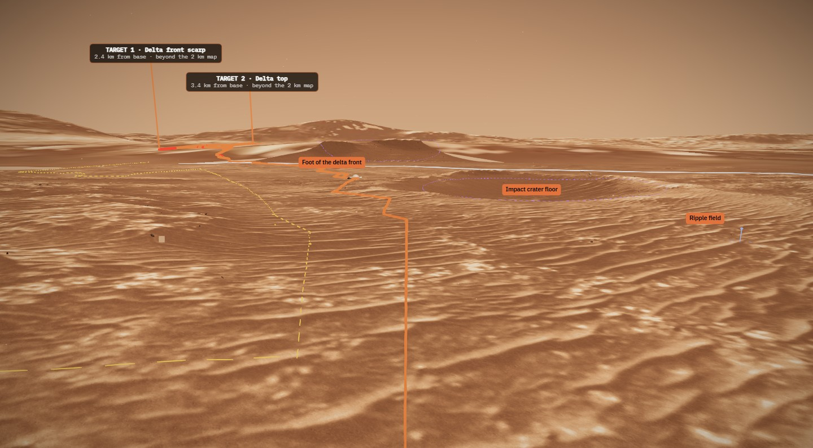
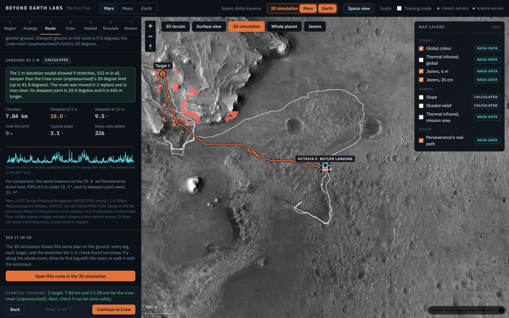
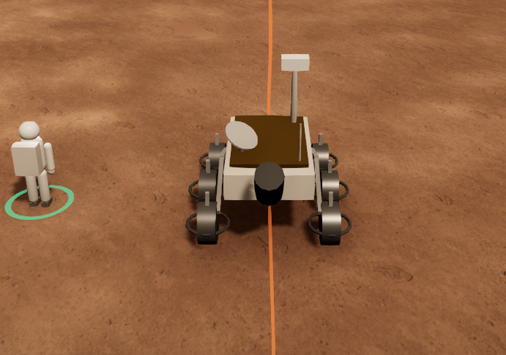

NASA SPACE APPS 2026 · INTERPLANETARY SURVIVAL GUIDE: MARTIAN MAP
Beyond Earth Labs
One 3D map to plan a Marswalk at Jezero Crater, check it, and rehearse it on Mars and on Earth.
A crew on Mars has to know where it can go, whether it can get back, and what to do when the plan breaks. This answers all three, on terrain built from NASA data.
Konner Harris
Everything here runs in your browser, with no server behind it. The full application plans a mission at Jezero, checks its supplies, runs the traverse with emergencies, ranks Earth analog sites, sizes the habitat, and shows the solar system, the Moon and Earth. Its mission service is the real one, compiled to run in the page. Two things need the services in the repository and say so when asked: the 1 m route check and the rover camera frames, which read NASA's servers live. Map tiles far from Jezero may be blank.

One mission, seven connected parts
- 01MapFive NASA missions on one map of Jezero, checked against where Perseverance really drove.→ sets the 20° slope limit
- 02Earth analogsA terrain network ranks Earth sites that resemble this ground.→ picks the rehearsal site
- 03RoutePlanned at 20 m, checked on NASA's 1 m model, with science stops.→ distance and time on site
- 04Crew safetySupplies with a reserve, a radiation estimate, a health monitor.→ go, or refused with why
- 05HabitatPower, water, oxygen and a greenhouse for the stay.→ the base the crew returns to
- 06SimulationThe rover or the astronaut runs it in 3D; emergencies force a new plan.→ a log and a score
- 07ReviewThe mission report, the evidence, and the limits.→ what to change next time
The product

